A Comédia da Vida Privada
| EPISÓDIO | EXIBIÇÃO | REPRISE | |||
|---|---|---|---|---|---|
| 000 | 0x00 | "A Comédia da Vida Privada" adaptado por Jorge Furtado, Guel Arraes e João Falcão direção Guel Arraes com Débora Bloch, Fernanda Torres, Malu Mader, Marco Nanini, Paulo Betti e Tony Ramos |
23/08/1994 | 19/09/2010 14/02/2011 10/06/2013 |
|
| 1ª TEMPORADA - ANO 1 - 1995 | |||||
| 001 | 1x01 | 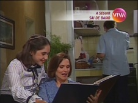 |
"Pais e Filhos" adaptado por Jorge Furtado e Guel Arraes direção Guel Arraes narração Paulo José com Marco Nanini, Louise Cardoso, Enrique Díaz e Patricia Perrone |
25/04/1995 | 22/05/2010 04/10/2010 21/01/2013 17/06/2013 |
| 002 | 1x02 | 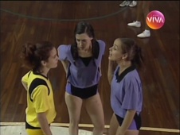 |
"Casados X Solteiros" adaptado por Jorge Furtado e Guel Arraes direção Guel Arraes com Antônio Fagundes, Cláudia Abreu, Daniel Dantas, Fernanda Torres, Giulia Gam e Marco Nanini |
23/05/1995 | 23/05/2010 11/10/2010 28/01/2013 24/06/2013 |
| 003 | 1x03 | 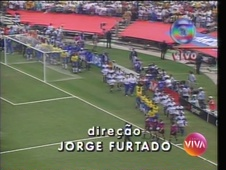 |
"Apenas Bons Amigos" adaptado por Jorge Furtado, Pedro Cardoso e Guel Arraes direção Jorge Furtado com Diogo Vilela, Fernanda Torres, Paulo Betti, Pedro Cardoso e Rogério Cardoso |
20/06/1996 | 30/05/2010 18/10/2010 04/02/2013 01/07/2013 |
| 004 | 1x04 | 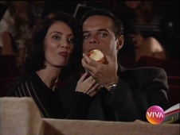 |
"A Casa Dos Quarenta" adaptado por Jorge Furtado, Guel Arraes, Pedro Cardoso e Nelson Nadotti direção Guel Arraes com Marco Nanini, Eliane Giardini, Paulo Betti, Diogo Vilela e Mylla Christie participação especial Fernanda Montenegro |
04/07/1995 | 06/06/2010 25/10/2010 11/02/2013 08/07/2013 |
| 005 | 1x05 | "Sexo na Cabeça" adaptado por Alexandre Machado, Pedro Cardoso, Jorge Furtado, Fernanda Young e Guel Arraes direção Mauro Mendonça Filho com Alexandre Borges, Cláudia Abreu, Giulia Gam, Marisa Orth e Pedro Cardoso |
08/08/1995 | 13/06/2010 01/11/2010 18/02/2013 15/07/2013 |
|
| 006 | 1x06 | 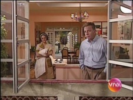 |
"Mãe é Mãe" adaptado por Pedro Cardoso, Jorge Furtado e Guel Arraes direção Guel Arraes com Marieta Severo, Murilo Benício, Patrícia Perrone e Enrique Díaz participação especial Marco Nanini |
03/09/1995 | 20/06/2010 08/11/2010 25/02/2013 22/07/2013 |
| 007 | 1x07 | 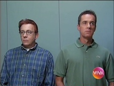 |
"Menino ou Menina" adaptado por Guel Arraes, Pedro Cardoso, Fernanda Young e Alexandre Machado redação final João Falcão direção João Falcão com Cláudia Raia, Débora Bloch, Diogo Vilela, Fernanda Torres, Luiz Fernando Guimarães e Marco Nanini |
07/11/1995 | 27/06/2010 15/11/2010 04/03/2013 29/07/2013 |
| 008 | 1x08 | 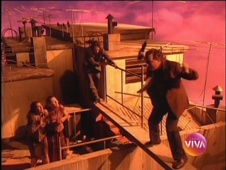 |
"O Pesadelo da Casa Própria" adaptado por Jorge Furtado, Alexandre Machado e Fernanda Young redação final Pedro Cardoso e Guel Arraes direção Mauro Mendonça Filho com Marco Nanini, Adriana Esteves, Louise Cardoso e Pedro Cardoso |
12/12/1995 | 04/07/2010 22/11/2010 11/03/2013 05/08/2013 |
| 2ª TEMPORADA - ANO 2 - 1996 | |||||
| 009 | 2x01 | "A Próxima Atração" de Jorge Furtado colaboração Luís Fernando Veríssimo e Guel Arraes direção Guel Arraes com Andrea Beltrão, Cláudia Abreu, Marcos Palmeira e Pedro Cardoso |
02/03/1996 | 11/07/2010 29/11/2010 18/03/2013 12/08/2013 |
|
| 010 | 2x02 | 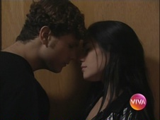 |
"O Grande Amor da Minha Vida" de João Falcão e Guel Arraes colaboração Alexandre Machado e Fernanda Young direção João Falcão com Selton Mello e Alessandra Negrini |
30/04/1996 | 26/09/2010 06/12/2010 25/03/2013 19/08/2013 |
| 011 | 2x03 | 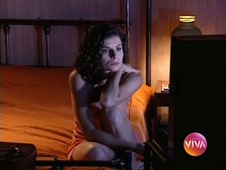 |
"O Mistério da Vida Alheia" de Jorge Furtado colaboração Luís Fernando Veríssimo direção Mauro Mendonça Filho com Débora Bloch, Diogo Vilela, Daniel Dantas, Betty Gofman e Ernani Moraes |
04/06/1996 | 18/07/2010 13/12/2010 01/04/2013 26/08/2013 |
| 012 | 2x04 | 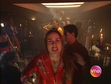 |
"Como Destruir Seu Casamento" de Cláudio Paiva colaboração Luís Fernando Veríssimo e Jorge Furtado direção Mauro Mendonça Filho com Daniel Dantas, Débora Bloch, Giulia Gam e Pedro Cardoso |
25/06/1996 | 25/07/2010 20/12/2010 08/04/2013 02/09/2013 |
| 013 | 2x05 | "As Idades do Amor" de Jorge Furtado e Carlos Gerbase colaboração Luís Fernando Veríssimo direção Guel Arraes com Fernanda Montenegro, Fernanda Torres, Rogério Cardoso e Pedro Cardoso |
20/08/1996 | PULADO 15/04/2013 |
|
| 014 | 2x06 | 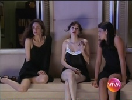 |
"Mulheres", de João Falcão colaboração Adriana Falcão, Luís Fernando Veríssimo e Jorge Furtado direção João Falcão com Malu Mader, Bianca Byington, Maria Luisa Mendonça e Rodrigo Santoro participação Daniel Dantas, Rodolfo Botino e Tuca Andrada |
17/09/1996 | 01/08/2010 27/12/2010 22/04/2013 16/09/2013 |
| 015 | 2x07 | 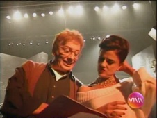 |
"Drama" de Jorge Furtado colaboração Luís Fernando Veríssimo e Guel Arraes direção Guel Arraes com Marieta Severo, Marco Nanini e Edson Celulari participação especial Giulia Gam |
29/10/1996 | 08/08/2010 03/01/2011 29/04/2013 23/09/2013 |
| 016 | 2x08 | 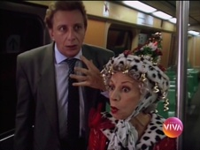 |
"Parece Que Foi Ontem" de João Falcão e Adriana Falcão colaboração Jorge Furtado e Luís Fernando Veríssimo direção João Falcão com Marco Nanini, Marieta Severo, Dirce Migliaccio, Selton Mello, Silvia Buarque, Luana Piovani, Bruno Garcia, Henrique Farias e Cecilia Dassi |
26/12/1996 | 15/08/2010 10/01/2011 06/05/2013 30/09/2013 |
| 3ª TEMPORADA - ANO 3 - 1997 | |||||
| 017 | 3x01 | 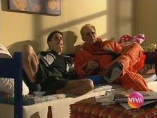 |
"Papai Foi Pra Lua" de Cláudio Paiva colaboração Jorge Furtado direção Mauro Mendonça Filho com Pedro Cardoso, Fernanda Torres, Carla Marins e Ernani Moraes ator especialmente convidado Francisco Cuoco |
01/04/1997 | 22/08/2010 17/01/2011 13/05/2013 14/10/2013 |
| 018 | 3x02 | 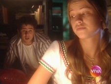 |
"O Que Você Vai Ser Quando Crescer" de Luís Fernando Veríssimo e Jorge Furtado direção Fernando Meirelles e César Charlone apresentando Fábio Araújo com Luana Piovani e Fábio Assunção participações especiais Dirce Migliaccio e Laura Cardoso |
29/04/1997 | 29/08/2010 24/01/2011 20/05/2013 21/10/2013 |
| 019 | 3x03 | 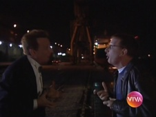 |
"A Grande Noite" de João Falcão e Adriana Falcão direção João Falcão com Marco Nanini, Marieta Severo e Andréa Beltrão atores convidados Laura Cardoso e Sérgio Mamberti participação especial Luiz Fernando Guimarães |
24/06/1997 | 05/09/2010 31/01/2011 27/05/2013 28/10/2013 |
| 020 | 3x04 | "Anchietanos" de Giba Assis Brasil, Carlos Gerbase e Jorge Furtado direção Jorge Furtado com Murilo Benício, Andrea Beltrão, Bruno Garcia e Matheus Nachtergaele participações especiais Luiz Fernando Guimarães e Marco Nanini |
29/07/1997 | 12/09/2010 07/02/2011 03/06/2013 04/11/2013 |
|
| 021 | 3x05 | "A Voz do Coração" de Adriana Falcão redação final João Falcão direção João Falcão com Andrea Beltrão, Fábio Assunção, Drica Moraes, Ary França, Susana Ribeiro e Matheus Nachtergaele atores convidados Sérgio Mamberti e Laura Cardoso |
26/08/1997 | PULADO | |